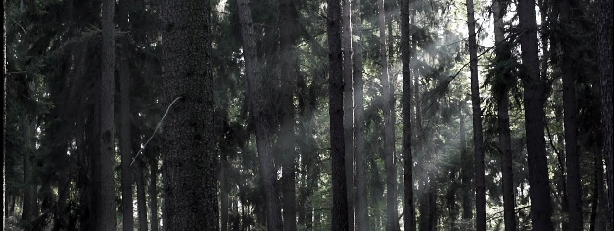

The PNW’s Hoh Rainforest is one of the few temperate rainforests not only in North America, but in the world. A green canopy of lush humidity, covered in a blanket of moss and ferns, the Hoh Rainforest is largely untouched by man and can even offer sights of wildlife on less crowded days. Not that a rainforest isn’t beautiful on its own, but it sure doesn’t hurt that it’s nestled between the Pacific Ocean and the Olympic Mountain range.
The PNW includes half of the states and provinces in North America with Pacific Ocean coastline. With beaches galore, it is one of the prime areas in the world for whale-watching, especially for orcas. America the Beautiful ends on the poignant note of “from sea to shining sea.” Well, the PNW has one of those.
